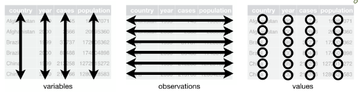

Please email me by 1pm if you require any permits or changes
Our office admin leaves at 4 and I am not able to see or issue permits myself
Pset 1 was due yesterday at noon
Solutions will be posted on Thursday at noon
If you forgot to turn it in, please email me asap to request an extension to Thursday
If you are new to the class, please see me after class
We will try to schedule a remediation day to help you get caught up
0.2 Last week
Data visualization with ggplot2
Let’s go back to revisit one thing we missed! Shortcuts
0.3 You are here
0.3.0.0.1 Data science with R
R basics
Data visualization
Data wrangling
0.3.0.0.2 Stats & Model buidling
Sampling distribution
Hypothesis testing
Model specification
Model fitting
Model accuracy
Model reliability
0.3.0.0.3 More advanced
Classification
Inference for regression
Mixed-effect models
0.4 Data science workflow
Data Science Workflow by R4DS
0.5 Overview for today
Tidyverse
Tidy data
purr - functional programming
tibble - modern data.frame
readr - reading data
1 Tidyverse
The tidyverse is an opinionated collection of R packages designed for data science. All packages share an underlying design philosophy, grammar, and data structures.
── Attaching core tidyverse packages ──────────────────────── tidyverse 2.0.0 ──
✔ dplyr 1.1.4 ✔ readr 2.1.5
✔ forcats 1.0.0 ✔ stringr 1.5.1
✔ ggplot2 3.5.1 ✔ tibble 3.2.1
✔ lubridate 1.9.3 ✔ tidyr 1.3.1
✔ purrr 1.0.2
── Conflicts ────────────────────────────────────────── tidyverse_conflicts() ──
✖ dplyr::filter() masks stats::filter()
✖ dplyr::lag() masks stats::lag()
ℹ Use the conflicted package (<http://conflicted.r-lib.org/>) to force all conflicts to become errors
Returns a message in Google Colab:
a list of packages loaded
a warning of potential name conflicts
1.3 Tidy data
Tidyverse makes use of tidy data, a standard way of structuring datasets:
each variable forms a column; each column forms a variable
each observation forms a row; each row forms an observation
value is a cell; each cell is a single value
1.4 Tidy data

Visual of tidy data rules, from R for Data Science
Why tidy data?
Because consistency and uniformity are very helpful when programming
Variables as columns works well for vectorized languages (R!)
2purr
Functional programming
to illustrate the joy of tidyverse and tidy data
2.1purr
purrr enhances R’s functional programming (FP) toolkit by providing a complete and consistent set of tools for working with functions and vectors. If you’ve never heard of FP before, the best place to start is the family of map() functions which allow you to replace many for loops with code that is both more succinct and easier to read.
We say “functions” because there are 5, one for each type of vector:
map() - list
map_lgl() - logical
map_int() - integer
map_dbl() - double
map_chr() - character
2.4map use case
df <-data.frame(x =1:10,y =11:20,z =21:30)
with copy+paste
mean(df$x)
[1] 5.5
mean(df$y)
[1] 15.5
mean(df$z)
[1] 25.5
with map
map(df, mean)
$x
[1] 5.5
$y
[1] 15.5
$z
[1] 25.5
3tibble
modern data frames
3.1tibble
A tibble, or tbl_df, is a modern reimagining of the data.frame, keeping what time has proven to be effective, and throwing out what is not. Tibbles are data.frames that are lazy and surly: they do less and complain more
never changes type of input (never converts strings to factors!)
never changes the name of variables
only recycles vectors of length 1
never creates row names
The take-away is that data.frame and tibble sometimes behave differently. The behavior of tibble makes more sense for modern data science, so we should us it instead!
# A tibble: 4 × 2
x y
<int> <chr>
1 1 a
2 2 b
3 3 c
4 4 d
Pass a column of vectors:
tibble(x =1:4,y =c("a", "b", "c", "d"))
# A tibble: 4 × 2
x y
<int> <chr>
1 1 a
2 2 b
3 3 c
4 4 d
Define row-by-row:
tribble(~x, ~y,"a", 1,"b", 2,"c", 3,"d", 4)
# A tibble: 4 × 2
x y
<chr> <dbl>
1 a 1
2 b 2
3 c 3
4 d 4
3.4 Test if tibble
With is_tibble(x) and is.data.frame(x)
Data frame:
df <-data.frame(x =1:4,y =c("a", "b", "c", "d"))
is_tibble(df)
[1] FALSE
is.data.frame(df)
[1] TRUE
Tibble:
tib <-tribble(~x, ~y,"a", 1,"b", 2,"c", 3,"d", 4)
is_tibble(tib)
[1] TRUE
is.data.frame(tib)
[1] TRUE
3.5data.frame v tibble
You will encounter 2 main differences:
printing
by default, tibbles print the first 10 rows and all columns that fit on screen, making it easier to work with large datasets.
also report the type of each column (e.g. <dbl>, <chr>)
subsetting - tibbles are more strict than data frames, which fixes two quirks we encountered when subsetting with [[ and $:
tibbles never do partial matching
they always generate a warning if the column you are trying to extract does not exist.
4readr
reading data
4.1readr
The goal of readr is to provide a fast and friendly way to read rectangular data from delimited files, such as comma-separated values (CSV) and tab-separated values (TSV). It is designed to parse many types of data found in the wild, while providing an informative problem report when parsing leads to unexpected results.
Reading more complex file types requires functions outside the tidyverse:
excel with readxl - see Spreadsheets in R for Data Science
google sheets with googlesheets4 - see Spreadsheets in R for Data Science
databases with DBI - see Databases in R for Data Science
json data with jsonlite - see Hierarchical data in R for Data Science
4.9 Writing to a file
Write to a .csv file with
write_csv(students, "students.csv")
arguments: tibble, name to give file
5 Common problems readr
5.1 Data set containing 3 common problems
students <-read_csv('https://pos.it/r4ds-students-csv')
Rows: 6 Columns: 5
── Column specification ────────────────────────────────────────────────────────
Delimiter: ","
chr (4): Full Name, favourite.food, mealPlan, AGE
dbl (1): Student ID
ℹ Use `spec()` to retrieve the full column specification for this data.
ℹ Specify the column types or set `show_col_types = FALSE` to quiet this message.
students
# A tibble: 6 × 5
`Student ID` `Full Name` favourite.food mealPlan AGE
<dbl> <chr> <chr> <chr> <chr>
1 1 Sunil Huffmann Strawberry yoghurt Lunch only 4
2 2 Barclay Lynn French fries Lunch only 5
3 3 Jayendra Lyne N/A Breakfast and lunch 7
4 4 Leon Rossini Anchovies Lunch only <NA>
5 5 Chidiegwu Dunkel Pizza Breakfast and lunch five
6 6 Güvenç Attila Ice cream Lunch only 6
Column contains unexpected values (AGE)
Missing values are not NA (AGE and favorite.food)
Column names have spaces (Student ID and Full Name)
5.2 Column contains unexpected values
Your dataset has a column that you expected to be logical or double, but there is a typo somewhere, so R has coerced the column into character.
students
# A tibble: 6 × 5
`Student ID` `Full Name` favourite.food mealPlan AGE
<dbl> <chr> <chr> <chr> <chr>
1 1 Sunil Huffmann Strawberry yoghurt Lunch only 4
2 2 Barclay Lynn French fries Lunch only 5
3 3 Jayendra Lyne N/A Breakfast and lunch 7
4 4 Leon Rossini Anchovies Lunch only <NA>
5 5 Chidiegwu Dunkel Pizza Breakfast and lunch five
6 6 Güvenç Attila Ice cream Lunch only 6
. . .
Solve by specifying the column type col_double() and then using the problems() function to see where R failed.
Warning: One or more parsing issues, call `problems()` on your data frame for details,
e.g.:
dat <- vroom(...)
problems(dat)
problems(students_coerced)
# A tibble: 1 × 5
row col expected actual file
<int> <int> <chr> <chr> <chr>
1 6 5 a double five ""
5.3 Missing values are not NA
Your dataset has missing values, but they were not coded as NA as R expects.
students
# A tibble: 6 × 5
`Student ID` `Full Name` favourite.food mealPlan AGE
<dbl> <chr> <chr> <chr> <chr>
1 1 Sunil Huffmann Strawberry yoghurt Lunch only 4
2 2 Barclay Lynn French fries Lunch only 5
3 3 Jayendra Lyne N/A Breakfast and lunch 7
4 4 Leon Rossini Anchovies Lunch only <NA>
5 5 Chidiegwu Dunkel Pizza Breakfast and lunch five
6 6 Güvenç Attila Ice cream Lunch only 6
. . .
Solve by adding an na argument (e.g. na=c("N/A"))
(students_nas <-read_csv(file ='https://pos.it/r4ds-students-csv', na =c("N/A", "<NA>")))
Rows: 6 Columns: 5
── Column specification ────────────────────────────────────────────────────────
Delimiter: ","
chr (4): Full Name, favourite.food, mealPlan, AGE
dbl (1): Student ID
ℹ Use `spec()` to retrieve the full column specification for this data.
ℹ Specify the column types or set `show_col_types = FALSE` to quiet this message.
# A tibble: 6 × 5
`Student ID` `Full Name` favourite.food mealPlan AGE
<dbl> <chr> <chr> <chr> <chr>
1 1 Sunil Huffmann Strawberry yoghurt Lunch only "4"
2 2 Barclay Lynn French fries Lunch only "5"
3 3 Jayendra Lyne <NA> Breakfast and lunch "7"
4 4 Leon Rossini Anchovies Lunch only ""
5 5 Chidiegwu Dunkel Pizza Breakfast and lunch "five"
6 6 Güvenç Attila Ice cream Lunch only "6"
5.4 Column names have spaces
Your dataset has column names that include spaces, breaking R’s naming rules. In these cases, R adds backticks (e.g. `brain size`);
. . .
We can use the rename() function to fix them.
students %>%rename(student_id =`Student ID`,full_name =`Full Name` )
# A tibble: 6 × 5
student_id full_name favourite.food mealPlan AGE
<dbl> <chr> <chr> <chr> <chr>
1 1 Sunil Huffmann Strawberry yoghurt Lunch only 4
2 2 Barclay Lynn French fries Lunch only 5
3 3 Jayendra Lyne N/A Breakfast and lunch 7
4 4 Leon Rossini Anchovies Lunch only <NA>
5 5 Chidiegwu Dunkel Pizza Breakfast and lunch five
6 6 Güvenç Attila Ice cream Lunch only 6
. . . d If we have a lot to rename and that gets annoying, see janitor::clean_names().